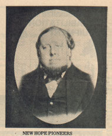

Ole Olson Vaagsland was born near Tordal, Norway on the first of May 1826 and baptised on the fifteenth. He was confirmed on the 4th of September in 1842. Often church records of this sort are the only written records of a person's existance. He immigrated to Wisconsin with his parents in 1850. Ole's last name was changed to Wogsland like everyone else who immigrated in this group. He married Gunhild O. Andersdotter who was also born in Norway (whether this was before or after his immigration is unknown). Together they had eight children.
Ole is known to have worked as a county clerk in Wisconsin. He also has the distinction of being the first Norwegian immigrant elected to a Portage County office, namely that of 2nd District Supervisor in 1866. He had been appointed to the office in 1865 and served in it until 1868. Ole became postmaster of Alban in 1873 and in 1874 was elected to the county register of deeds. He died 25 June 1879 in New Hope Town, WI.